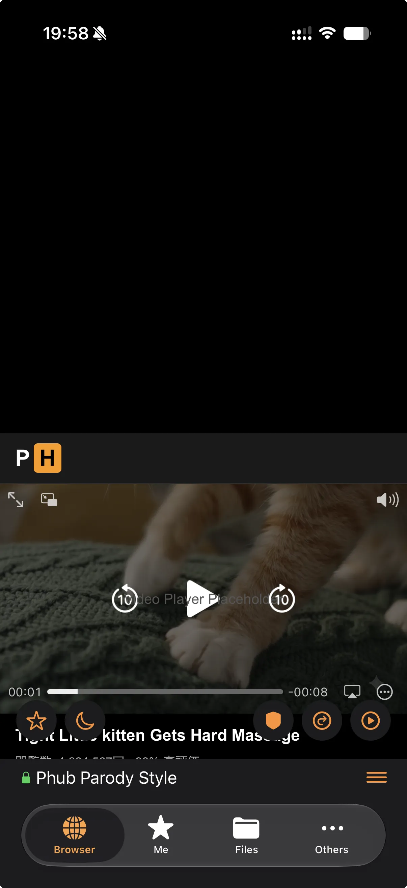
片手操作に最適化
ジェスチャー対応のUIを画面下部に集約。上下パディングで、画面の上端に親指を伸ばす日々は終わり。
Features
片手で完結するUI設計を軸に、深夜の閲覧体験を全方位でチューニング。動画で見たアレ、全部入ってる。

ジェスチャー対応のUIを画面下部に集約。上下パディングで、画面の上端に親指を伸ばす日々は終わり。
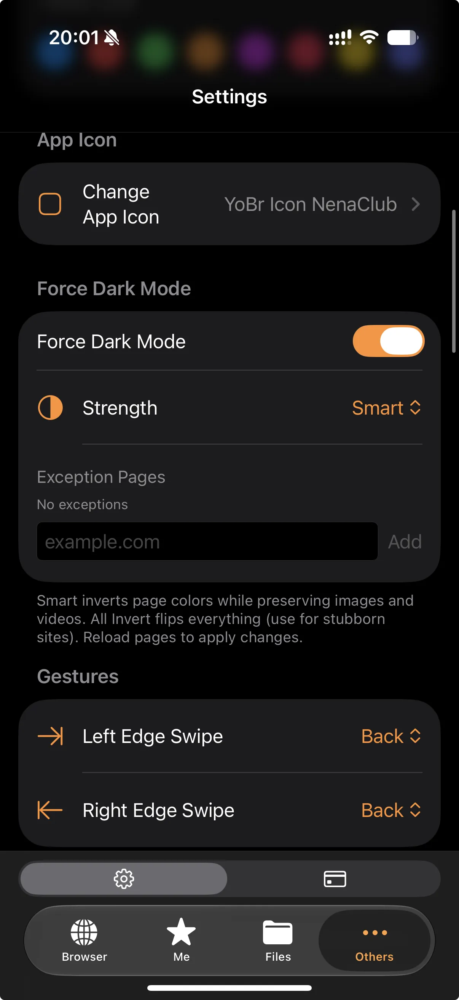
白基調のサイトを自動で暗転。off / smart / AllInvert から選べて、例外ページの指定もOK。
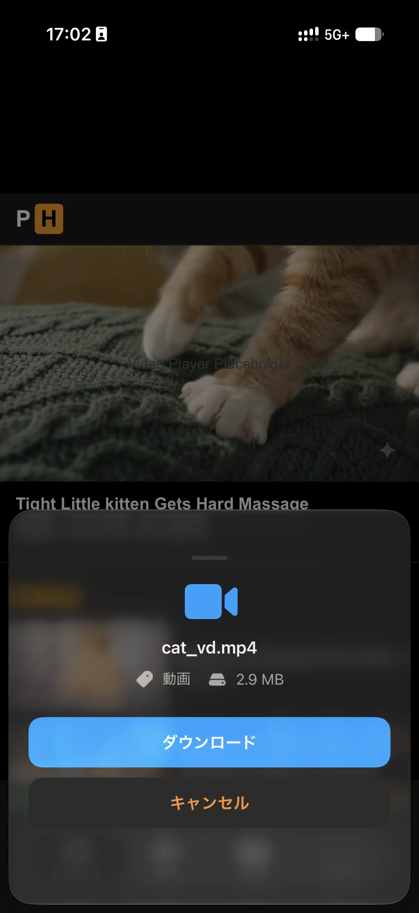
.ts / .mp4 / 画像などのメディアをワンタップでダウンロード。失敗したDLは回数を消費しません。
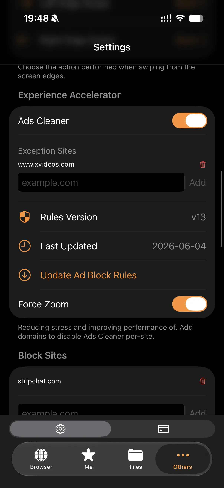
CSSレベルで広告を除去。ポップアップや透明オーバーレイも自動排除。サイト別の例外設定にも対応。
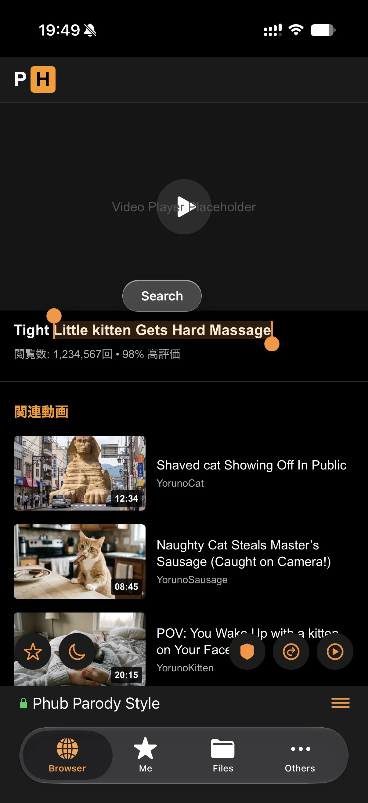
テキスト選択で検索ボタンが出現。「{text} full episode」のようなカスタムキーワード検索も。
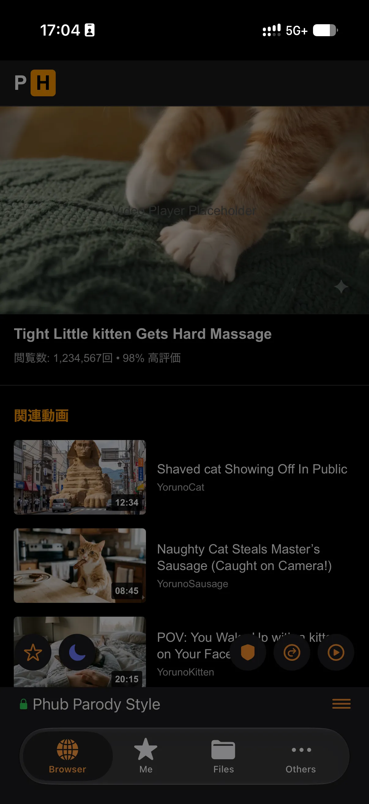
画面にさらに暗いレイヤーを一枚。最低輝度でもまだ眩しい深夜のために。
→ 下の🌙ボタンで体験できます。
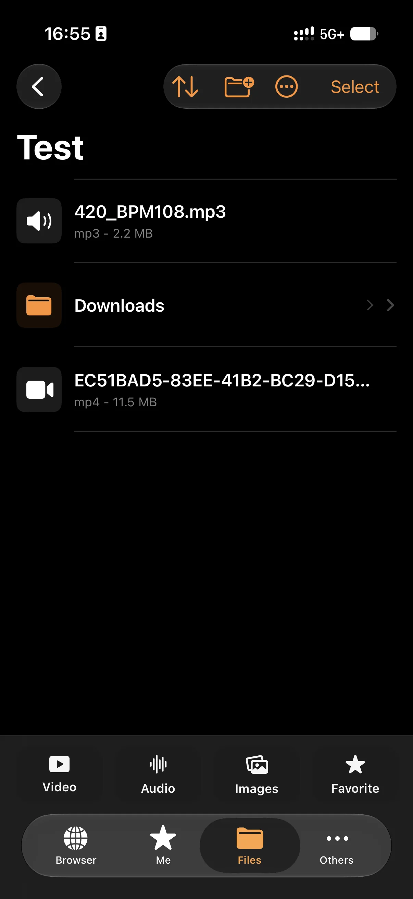
リスト表示でファイル種別・サイズによる絞り込み。圧縮・リサイズなどの変換もアプリ内で完結。
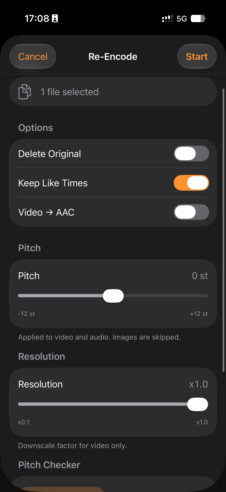
ボイスチェンジャー除去に対応。ピッチチェッカーで確認して、まとめて一括変換。

スワイプでファイル間を移動。お気に入りのシーンはLikeTimeでマーク、25%スキップで落下事故も防止。
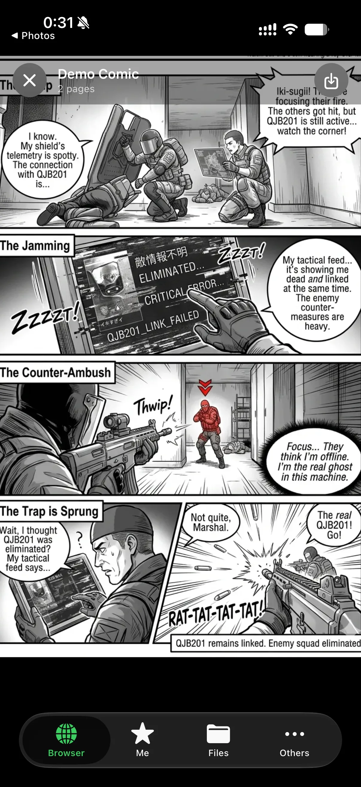
重すぎるサイトのJavaScriptを無視して広告レス発熱レスで快適マンガ閲覧。
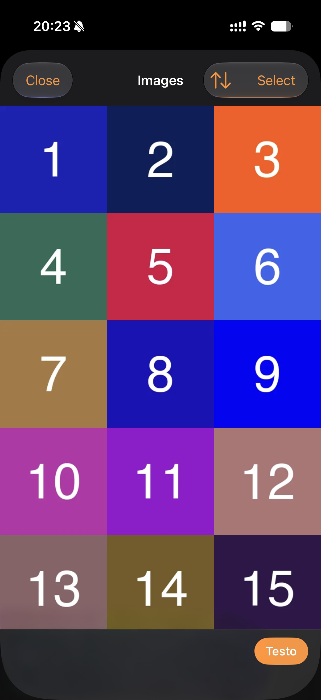
動画・画像をサムネイル表示して直感的に管理。好きな動画の名前は覚えなくて良い!
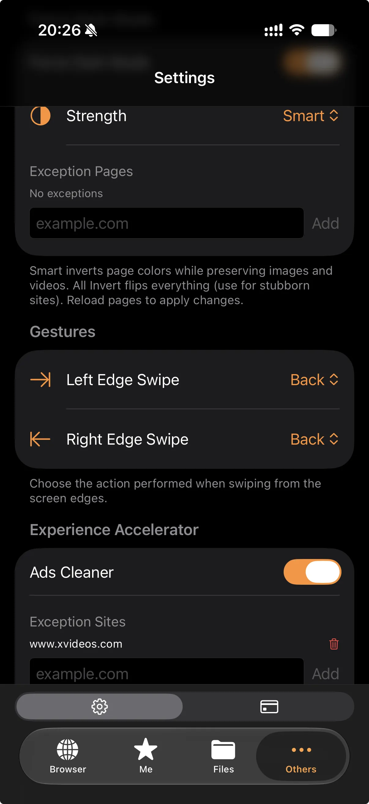
スワイプやタップで、戻る・進む・更新・新しいタブなどの操作が可能。片手でのブラウジングをさらに快適に。
Download Feature
対応サイトの動画・音声・画像を直接保存。手順は4つだけ。
| Status | サイト例 |
|---|---|
| ✅ 対応(HLS/MP4) | 一般的なHLS/MP4ストリーム配信サイト |
| ❌ 非対応(e.g. DRM) | Youtube / Netflix / Amazon Prime Video など |
400 DLシステムエラー / 404 リンク切れ / 500 サイト側ブロック
※ 対応サイトは予告なく変更される場合があります。ダウンロードは合法の範囲で、自己責任で。
※ SystemErrorの場合のみ回数が減りません。間違えてDLした場合は減ります。
コア機能はFreeプランで全部使えます。課金が効いてくるのは「保存し放題にしたくなってから」。プランの詳細はアプリ内のBilling画面で。
Installation
配布はAltStore経由。iPhone専用(iPad非対応)/ iOS 26.3.1以上。AltStoreが初めてでも大丈夫、下の順番どおりにやればOK。
altstore://source?url=https://raw.githubusercontent.com/C0A2518617/YorunoBrowser_Official/main/source.pal.json
.ipa をダウンロードこの方式はアップデートが手動です。新しい.ipaを毎回インストールしてください。
FAQ
使えます。Freeプランあり。片手操作も強制ダークもタダで全部使えます。ヘビーにDLする人だけ、アプリ内で有料プランを選べばOK。
多くの機能がAppleのガイドラインに抵触するため、App Storeでの配布は不可能です。だからAltStore。
開発者は日本在住の個人です。ソースは非公開ですが、データは一切収集していません。仮に集めたとしても、ストレージ代で破産します。
このソフトウェアは単なるブラウザであり、違法行為を助長するものではありません。合法の範囲で、自己責任でご利用ください。
現在iPhoneのみ。将来的には検討するかも……ですが、正直あまり期待はしないでください。